Database Plan
Brief
Before starting the database, I had already created and styled the website that I was going to base my database off. My aim at the end of this project was to include two or three database tables in my website that people could interact with. Before starting the project, I planned out what my tables were going to be, below you can see the different tables I planned out.
Overall Project Backlog
This is a screenshot of the overall project backlog that I made for the database section of this website. It is taken half way through the project, more specifically when I had just started the classes database.
This is the link to the database project backlog 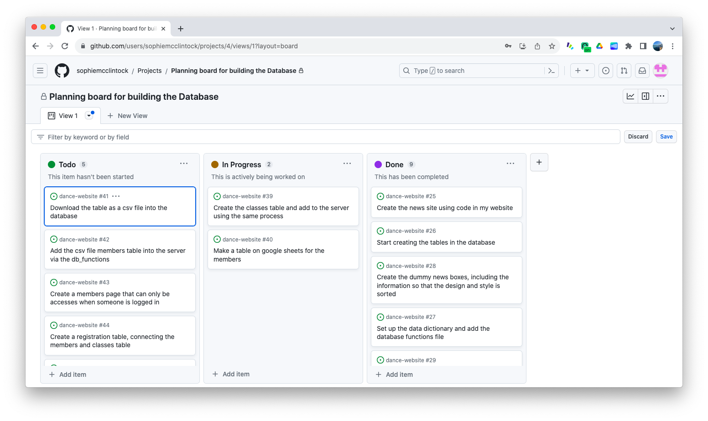Overall Plan
Below you can see my overall plan for the database section of this website. The news, classes, member and contact databases are all quite similar, while the registration page is quite different. The registration table will be used to connect the classes and member database.
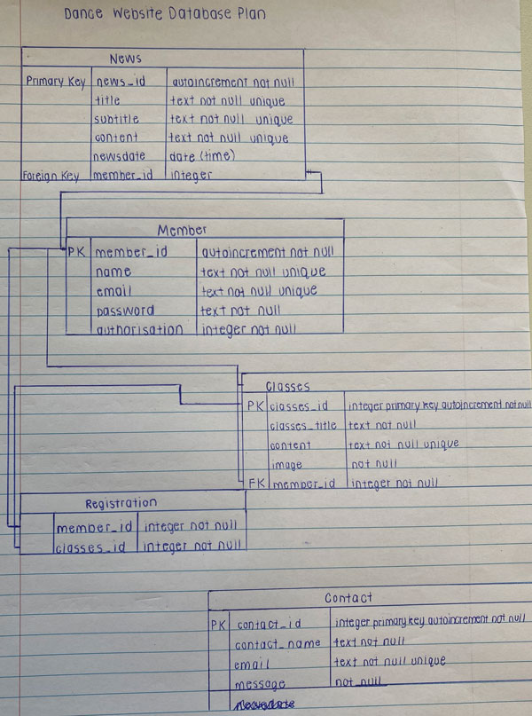Describing Relevant Implications
Privacy
Privacy is just about making sure that the information of the members is secure. For example, other users should not be able to view others personal information such as their phone number or email address. It also means only collecting the information needed to know when they are enrolling in the dance school. Passwords also need to be secure and different for each person.
Functionality
Functionality means that the database works properly. It should be error free and easy for a developer to write queries for it. It is making sure that the sql queries work and the data is of a consistent format between different cells in the same column. Foreign key references also need to be correct so that the correct member is associated with the correct class or news item that they have posted. The best way to check the functionality is to create test queries and regularly test everything in the website to make sure it is easy to use.
Sustainability and Future Proofing
This means make sure the database is sustainable or able to be used in the future by different people other than me. This requires me to lay everything out so that it can be updated really easily. For example, when I am making tables, I am ensuring to label everything with clear titles. It is also ensuring that all the foreign key references are working so that if you are updating their information, it will automatically appear in the correct of the other table, there is no need to update the information in more than one place.
End User Considerations
In general, this means making sure that the website is presented in an efficient and organised manner that caters to the users needs. It should be formatted to meet the users expectations of what a modern website should look like. This means that in forms you should be able to add, update and delete easily so that errors and minor mistakes can be avoided as much as possible.
Sprint One
Sprint one for the database consisted of creating a page on the website that I intend to turn into a database. For my website, I decided to start off by creating a database based off a news page where people could get information about what is happening at the dance school. I started off with creating the page and putting some styles in to make it look a little bit nicer because this would make the process of creating the actual database a lot easier! Then I imported the db_functions file that had already been created, and set up the news and members table in the create_db sqlite file. Once everything was ready to go, I actually ran the code and the database was created with just the two tables.
News Database Planning Board
This is a screenshot of the planning board I made to create the news database.
This is the link to the news database planning board 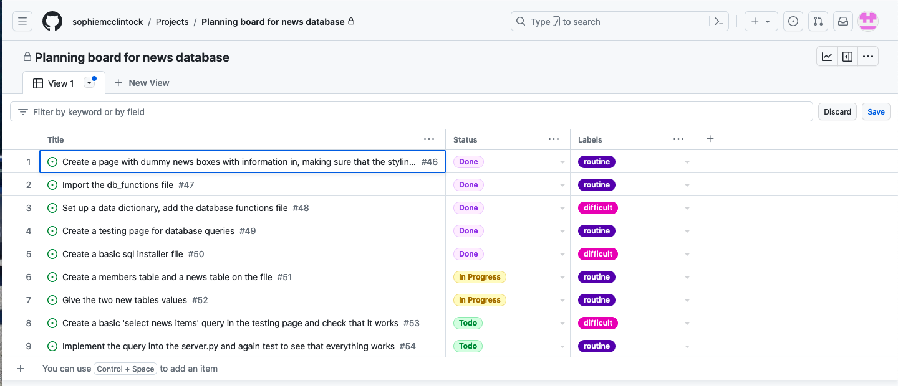The plan for the news and members table

The members and news table in the create_db sqlite file
As you can see in the screenshot below, I have created the two tables, members and news based on the plan above. I also added a foreign key reference at the bottom of the news table to contact member_id in the members table (which is the primary key) to the member_id in the news table(which is the foreign key).

Testing for the first sql query for Sprint One.
This particular sprint was about combining the member and news tables so the user could see the information on the news item and who posted the information. As can be seen in the run box below, we can see the description of what each thing is, followed by what it actually is. For example, you can see that it tells us that HIP HOP UNITE DANCE COMPETITION is a title to the news item. This is a really helpful test because it helps me make sure that the correct values are coming out under the correct section.

After doing this test I implemented it into the code into the actual html file. The first code that you can see below is what I put into the server.py file, it is just the general sql query. Then I edited the news website, which was previously just 'front-end' (which means the html and styles have been worked out but the buttons are no functional). This involved making the buttons functional, for example being able to add more news items, delete them or update the contents of them. This is the second part of code you can see below.
def news():
sql = """select news.news_id, news.title, news.subtitle, news.content, news.newsdate, member.name
from news
join member on news.member_id= member.member_id
order by news.newsdate desc;
"""
result = run_search_query_tuples(sql, (), db_path, True)
print(result)
return render_template("news.html", news=result){% for row in news %}
<div class="news rounded">
<h4><b>{{row ['title']}}</b></h4>
<hr>
<div class="subtitle">{{row['subtitle']}}</div>
<div class="news-text">{{row['content'] | replace("\n", "<br>") | safe}}</div>
<br>
<div class="row">
<div class="col-lg-6"><div class="news-subtext text-start">Posted by {{ row ['name']}} on {{ row ['newsdate'] | news_date }}</div></div>
<div class="col-lg-6 text-end">
<a class="btn btn-primary" href="{{ url_for('news_cud', id=row['news_id'], task='update') }}">Update</a>
<a class="btn btn-primary" href="{{ url_for('news_cud', id=row['news_id'], task='delete') }}">Delete</a>
</div>
</div>
</div>
<br>
{% endfor %}After doing this test, I had the general information for the news page but I still had to work on the update, delete and add side of the page and seeing as this included quite a lot more sql queries, I had to do a bit more testing. It was definitely a bit more difficult as I had to transfer what had already been recorded on each news section and then work out how to update it in the table. Below you can see a video of me testing the update, delete and add sections of the database to make sure that everything is working.
Video of running through the news update, delete and add.
Reflection
Overall I am pleased with the progress from Sprint One, I managed to pretty much create my first database based off the news page. It was a bit of a challenge starting everything up but the first time is always going to be difficult, so hopefully it will get easier with time! I got my testing py running as, which will be helpful when I am testing my sql queries before I put them into the actual website/database.
Sprint Two
In my next sprint, I decided to add another database based off my classes page. I had already made the classes page for the website and done all the styles so it just involved adding in the database, in quite a similar fashion to the news database. This would be a more a bit more difficult as it would include a few more pages, as it meant the people who had an authorisation of 0 (the teachers at the dance school) would be able to view who was in the classes, and add people or delete people. I had to connect the members database to the classes database and add a datalist so that when the teachers were trying to add people to the classes, they could see who was a member in the dance school. A lot of this database was actually quite similar to the news database so a lot of the code I just copied through and changed for the classes page.
Classes Database Planning Board
This is a screenshot of the planning board I made to create the classes database.
This is the link to the classes database planning board 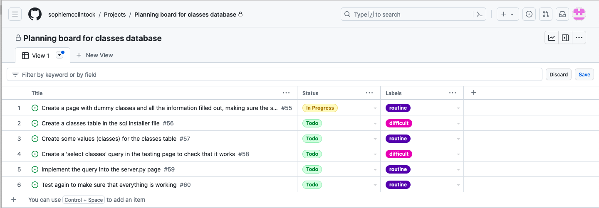The plan for the classes table added onto the other two tables

The classes table in the create_db sqlite file
This sprint just required me created one more table, the classes table as seen in the screenshot below. I used the plan above and as with Sprint One, I also added a foreign key reference at the bottom of the classes table to contact member_id in the members table (which is the primary key) to the member_id in the classes table (which is the foreign key). Below the table you can also see some of the inputs that I have put into the classes table, the Jazz, Contemporary, Tap and Hip Hop classes and the content to tell people what each of these styles are.

Testing for the first sql query for Sprint Two
This test is very similar to the news test, it involves combining the classes and member tables so they can run together. Again, as you can see in the ‘run’ area below there are the values for each class, the title, the content, and the image. All the update, delete and add more information was very similar to the news database so I did not really have to do anything new.

Reflection
Like I have said a few times, this was quite an easy sprint because I just copied a lot of the information over from the news database. I changed the layout of the classes page a bit and I am happy at how it looks now. My next step is to add the session information and organise the log in, log out information. This will be really helpful because it means I can sort out who has the authorization to add new news items and add people to classes etc.
Sprint 3
For this sprint I put the databases on hold for a second and add the sessions and log in and out functions. I started by setting up the log in and log out and making sure that worked. Then I added the session to all the pages that needed it, like the news page and classes page. This meant that if we were in session (logged in) and people had a certain authorisation people could add new items and add different students to the class. If we were just in session (logged in) then the ‘log in’ in the corner would change to a log out and we would be able to see who was logged in, what their member_id was and what their authorization was.
Below you can see a video of me testing to check if the sessions and log in/log out was working
Reflection
This sprint was a little bit more difficult as I had to work around the databases and make sure that it worked no matter who was signed in and the different authorization gave you access to different things. The next thing for me to do is create a registration table that links the classes table and the member table.
Sprint 4
In this sprint, I created a registration table that connected the classes table to the members table so that people could be enrolled in different classes, as well as a members table. This involved creating a google sheets table and importing it into Py charm so that I didn’t have to write out every single entry and could just get the information from the table. It also involved creating a new page that only people with a certain authorization could access, named members where you could see everyone who was enrolled in the dance school. Below you can see the plan I have done that includes the registration table.
Registration Database Planning Board
This is a screenshot of the planning board I made to create the registration database.
This is the link to the registration database planning board 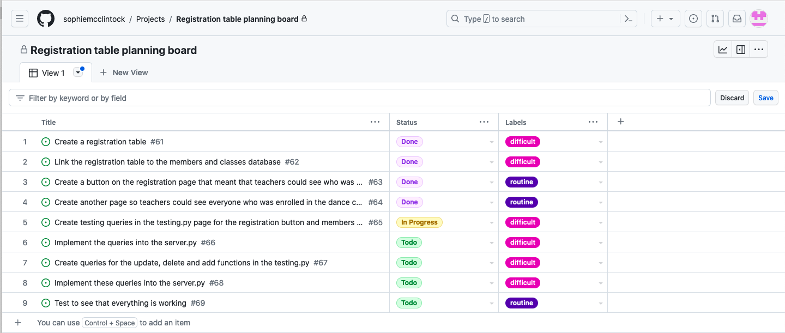The plan to connect the registration table to the other three tables
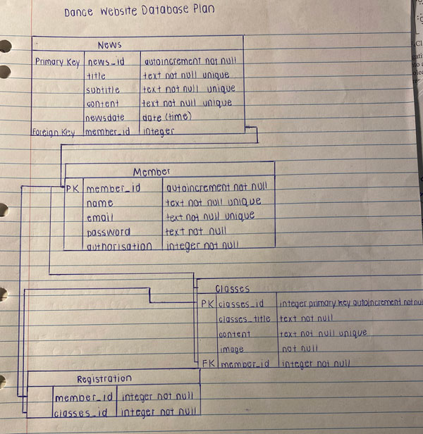The registration table in the create_db file
Again, I created a registration table in the create_db file. I created a member_id and classes_id so that I could connect each member to a particular class. The foreign keys each connected to a different table, the member_id in the registration table connected to the member_id in the member table and the classes_if in the registration table connected to the classes_id in the classes table. On the members table in the google sheet that I had previously put in the database, I had written what class each person was in so this connected to the registration table.
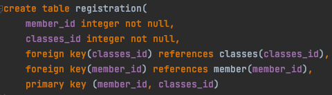Code for registration on layout.py
Below you can see the code for the registration table in the layout.py. There is code so that the teachers can delete people from the classes and add people to the classes. The query after the delete query is making sure that the teachers can see who is registered in each class and then the next query is making sure when the teachers are trying to add people, they can see everyone in the member database. I also had to put in an error message in case the teachers tried to add someone who was already registered in the particular class.
def registration():
data = request.args
print(data.keys())
if request.method == "GET":
if 'task' in data.keys():
if data['task'] == 'delete':
sql = """delete from registration where member_id = ? and classes_id = ?"""
values_tuple = (data['member_id'], data['classes_id'])
result = run_commit_query(sql, values_tuple, db_path)
print('delete')
print(result)
else:
return render_template('error.html' , message="Registrations task not understood")
sql = """select m.member_id, m.name, m.email
from member m
join registration r on m.member_id = r.member_id
where r.classes_id = ?
order by m.name asc"""
values_tuple = (data['classes_id'],)
result = run_search_query_tuples(sql, values_tuple, db_path, True)
sql = """select m.member_id, m.name, m.email
from member m
order by m.name asc
"""
memberset = run_search_query_tuples(sql, (), db_path, True)
return render_template("registration.html", registration=result, memberset=memberset, classes_id=data['classes_id'])
elif request.method == "POST":
f = request.form
if data['task'] == 'add':
sql = """insert into registration(member_id, classes_id)
values((select member_id from member where name = ?), ?)"""
values_tuple = (f['student'], data['classes_id'])
result = run_commit_query(sql, values_tuple, db_path)
if result is False:
message = "Failed to add, most likely the member is already registered"
return render_template("error.html", message=message)
return redirect(url_for('registration', classes_id=data['classes_id']))
else:
return render_template('error.html', message="Registrations task not understood")
else:
# return the page with an error message
message = "Unrecognised command coming from news page"
return render_template("error.html", message=message)While completing Sprint 4, there was one particular error that I found really difficult to fix. As you can see in the screenshot below, there is a ‘search’ button for adding current members to the different classes. But, I had originally done two different queries, one for selecting the people who were already in the class, so they could be named above when the teachers were looking at registrations, and one selecting all the members so anyone could be added to the class. But, it was only picking up the first query so the only members that I could add to the class were people who were already in the class, which was obviously not ideal. I fixed this error by naming the second query, ‘memberset’. This meant I just had to be careful and make sure that I was ‘calling’ the correct query. The second issue is what you can see in the first screenshot, if someone had been added to more than one class, like Adia in this example, their name would come up twice. I fixed this by making sure that the name in the member_table, which is where these names were selected from, was unique so that when they were added to a class, they would not be added to the member table again, causing their name to come up twice. I then had to make sure that on the registration table, the member_id was not unique so that people could be added to more than one class. The first screenshot below shows the second issue of the repeated names. The second screenshot shows my code when I had names both the queries the same thing, and the third screenshot is showing the fixed version, when I named the second query memberset instead. You can see a bit further down in the video that the issue of members names coming up twice had been fixed.
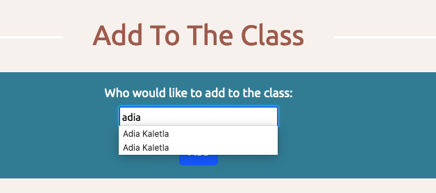 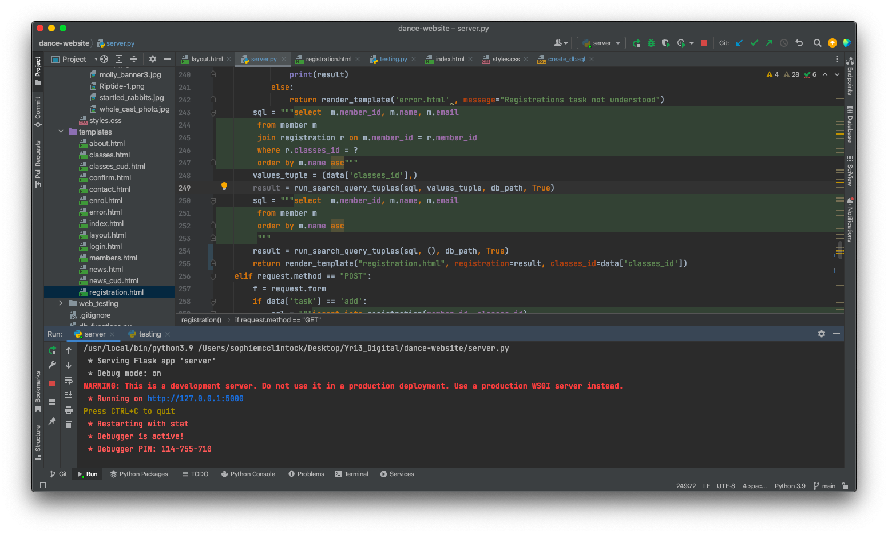 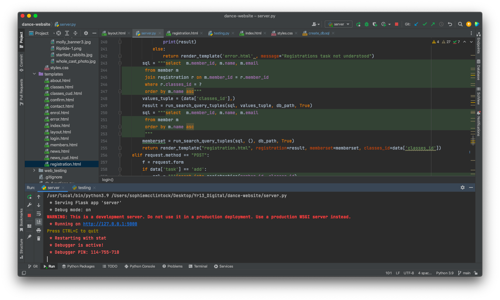Below you can see a video of me testing out the code above and making sure the teachers can see everyone who is registered in each class as well as delete and add people to different classes.
Reflection
This sprint was definitely a little bit more difficult because it required connecting the tables quite a bit more, in the queries and within the tables themselves. It was also quite different from the other two databases, which were quite similar to each other. But, I am pleased with the result, it is really good being able to add people from the members to the classes, it adds a new dimension to the website/database.
Sprint 5
For this sprint I created one more database based off the contact forms and touched up lots of little things in the other databases. The contact database was pretty much exactly the same as the news and classes database. So that did not require too much work. I have already put a final plan of all the tables at the top of the planning site, so I have not put another one below. The contact table is connected to any other table at the moment.
The contact table in the create_db file
Below you can see the contact table as well as an input that I have put in the contact table so that it is easy to test
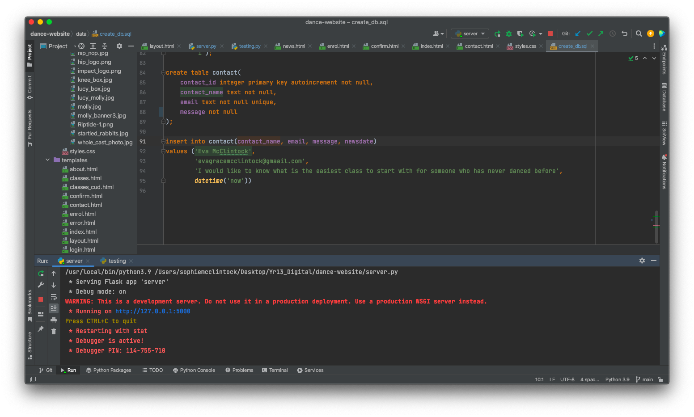Overall Reflection on the Databases
Overall, the database was difficult to make and some things came out a bit differently to what I was expecting. But overall, I am happy with how the website runs, in my opinion it is easy to navigate and the databases make sense where they are. An issue that I ran into was that because for each different class, there is a photo, I wasn’t sure what the best way was for the teachers to be able to put in a different photo via the website. This is something that I would want to do if I had more time. I would also like to implement a ‘roll’ idea to the classes/member database so that when the classes happened you could tick who came and who didn’t, and then you would be able to see how much each student has attended the particular class. Another thing that I would probably do if I had more time would create a way for the teachers to view more information about the members, for example, their birthday or year at school. This would be useful and seeing as it is already information that the members had to put in in order to enrol, it would not be too difficult to do. But, these are all things that would require a little bit more time and overall, I am happy with how much I got done.
Addressing Relevant Implications
Privacy
Privacy is not something that I have specially focused on while I have been creating this database. I have been doing lots of little shortcuts, for example giving everyone the same password so that it is easier for me to check everything works. But, if I was to focus on privacy a bit more I would ensure that everyone has a different password so people are unable to log into others accounts. I have made sure that only the teachers can access the member information and see who is enrolled in each class. When the students are enrolling in the school, they are only required to input the necessary information such as their name, birthday, year, and email and phone number so we could get in touch with them. I did not ask for their address as this was unnecessary in my opinion.
Functionality
Making sure my website was functional for me required lots of testing! I made sure to test after every sprint or every new thing that I had created so I could work out if there was an error relatively quickly. I also had to be careful and specific when I was doing certain things. For example, when I was transferring over the google sheets that had all the members, I made sure that the titles for the table I had made in the database previously were the same as the name of each column on the sheet. The sql installer file also helped me to set up the database so it was perfectly functional and I felt confident about making small changes during the development process. This file meant all the base information was already there and this made the general functionality a lot better. Wherever possible I also made the data fields for each different table unique and not null as this means any repeated entries or missed fields are picked up quickly during testing.
Sustainability and Future Proofing
One of the major things that I have done and am continuing to do to future proof my website, is to make sure as many things as possible are commented so that someone who is reading through my code can understand it. As I mentioned in the describing section, creating the foreign key references in the tables is also a form of sustainability because it means that you only have to update a particular reference in one place. For example, if someone’s name is changed in the members table, it will automatically change their name in the news table and the classes table.
End User Considerations
As a result of the database running through a website, for users to be able to understand and use the database efficiently, it needs to be laid out in a format that users would be familiar with, so similar to other websites. This means just simple things, like having a navigation bar at the top of the page so the users can navigate the page easily etc. It is important to have the different buttons (update, delete and add) on the forms so it is easy for the user to change the database. For example, the update button is a vital feature in case the user makes a typing mistake in one of the news items, or something like that, so that they are able to change it easily. Another important feature to have is error pages that tell the user the mistake they have made. For example, in my database when someone tries to add a student to a class that they have already been added to, an error message appears telling them pretty much exactly that, so they know what has gone wrong.